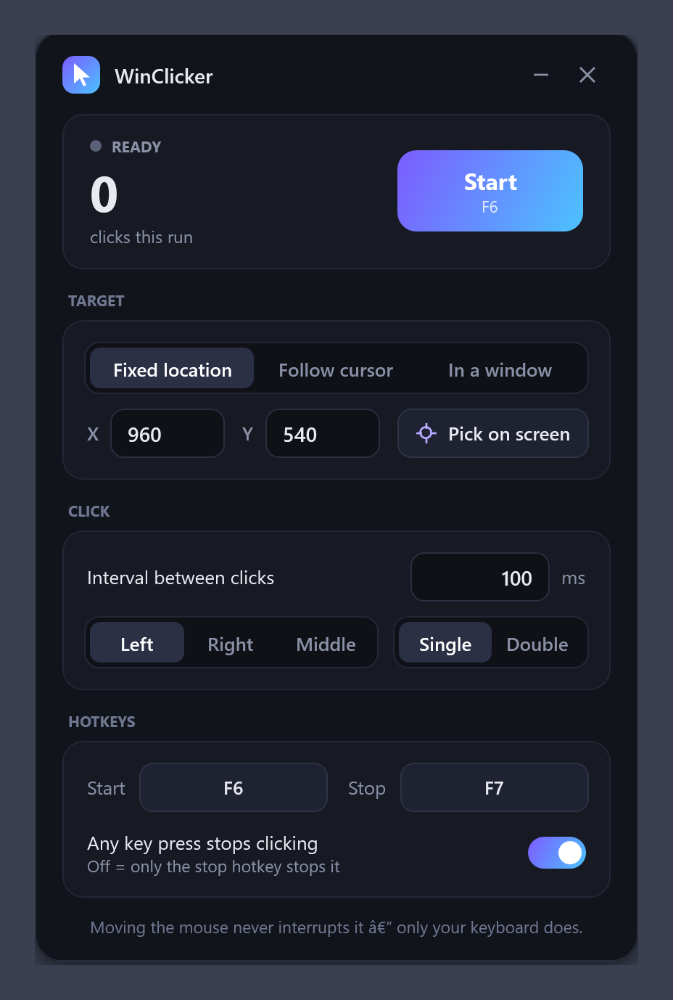

Pick a spot inside any window — a Chrome tab, a game, a form — and WinClicker keeps clicking there while you use your mouse and keyboard for everything else. Custom hotkeys, 1 ms intervals, one tiny exe.
⬇ Download WinClicker.exe
Clicks are delivered straight to the window you picked. Your real pointer never moves, the window can be behind others, and you keep working in other apps.
The classic modes too, with an on-screen picker that shows live coordinates across all monitors.
Choose any start and stop key, with Ctrl/Alt/Shift combos. The hotkeys are swallowed so the target app never sees them.
Moving the mouse never interrupts a run. Press the stop hotkey — or any key, if you turn that on — and it stops instantly.
A dedicated high-resolution timing thread. Left, right or middle button; single or double click.
A click-through popup announces every start and stop with the click count and run time.
| Mode | What happens | Stops on |
|---|---|---|
| Fixed location | Moves the pointer to X/Y and clicks there. Choose the spot with Pick on screen. | Stop hotkey, or any key (switchable) |
| Follow cursor | Clicks wherever your pointer currently is. | Stop hotkey, or any key (switchable) |
| In a window | Sends clicks directly to one window, mouse-free. The window may be behind others, but not minimized. | Stop hotkey only — your typing goes to your other apps |
Set the interval in milliseconds, pick the button and click type, then press F6 to start and F7 to stop (both changeable). Settings are remembered between launches.
Yes — that's the main reason it exists. Use the In a window mode: clicks are delivered to that window directly, so your mouse and keyboard stay free for everything else.
Yes. Background mode is verified against Google Chrome: with the Chrome window covered by another app, 25 posted clicks were all received by the page.
Fixed-location and follow-cursor modes work with any game, since they use the same input path as a real mouse. Background mode works with games that accept standard window mouse messages; a few games that read raw hardware input ignore synthetic clicks — use Fixed location for those.
Yes. The interval is in milliseconds, minimum 1 ms (up to ~1000 clicks per second). 100 ms = 10 CPS.
It's open source — the whole app is one C# file — and you can compile it yourself with build.bat using the compiler already on Windows. The SmartScreen warning only means the exe isn't code-signed.
Neither. It's a single portable exe. Only if the app you're clicking in runs as administrator do you need to run WinClicker as administrator too.
Windows 10 (1903 or newer) and Windows 11, 64-bit. It uses .NET Framework 4.8, which is already part of Windows.